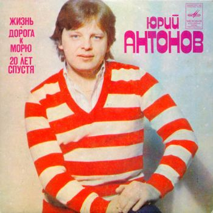

|

Юрий Михайлович Антонов (род. 19 февраля 1945, Ташкент, Узбекская ССР, СССР) — советский и российский композитор, эстрадный певец, поэт, актёр. Народный артист Российской Федерации (1997).
Сотрудничество с группой «Аракс» в 1979—1981 годах приносит Антонову всесоюзную славу. Три пластинки-миньона с записанными в сопровождении этого ансамбля песнями «Анастасия» (слова Леонида Фадеева), «Зеркало» (слова Михаила Танича), «Золотая лестница» (слова М. Виккерс), «Тебе» (слова Льва Ошанина), «Я вспоминаю» (слова Леонида Фадеева), «Не забывай» (слова Михаила Танича), «Моё богатство» (слова Игоря Кохановского), «Жизнь», «Дорога к морю», «Двадцать лет спустя», а также две пластинки-миньона с песнями «Маки», «Море», «Вот как бывает», «Крыша дома твоего», «Родные места», «Наша магистраль», записанные с другими музыкантами, разошлись тиражом свыше 20 миллионов копий, сделав Ю. Антонова одним из самых популярных исполнителей в СССР — в 1982—1983 годах он становится лучшим певцом СССР в хит-параде «Звуковая дорожка».
Дискография:
• 1970, миньон — ВИА «Поющие гитары» (одна из песен — «Нет тебя прекрасней») (Мелодия)
• 1970, LP — «Всем, кто любит песню» (одна из песен — «Нет тебя прекрасней» в исполнении ВИА «Поющие гитары»)(Мелодия)
• 1971, LP — Гюлли Чохели (одна из песен — «Песня, гитара и я») (Мелодия)
• 1973, миньон — Юрий Антонов и оркестр «Современник» (Мелодия) («Не грусти, пожалуйста», «Ну что с ним делать?», «У берёз и сосен»)
• 1973, миньон — Юрий Антонов и оркестр «Современник» (Мелодия) («Третий день», «Ну что с ним делать?», «У берёз и сосен»)
• 1973, миньон — ВИА «Весёлые ребята» (песни «Если любишь ты», «Ну что с ним делать?») (Мелодия)
• 1973, миньон — ВИА «Добры молодцы» (одна из песен — «О добрых молодцах») (Мелодия)
• 1973, LP — ВИА «Поющие сердца» (одна из песен — «Если любишь ты») (Мелодия)
• 1973, миньон — Лев Лещенко (песни «Твоя судьба», «Белая метель») (Мелодия)
• 1974, миньон — ВИА «Акварели» (одна из песен — «Рыжее лето») (Мелодия)
• 1974, LP — ВИА «Весёлые ребята» (одна из песен — «Отчего») (Мелодия)
• 1974, миньон — Юрий Антонов и ВИА «Магистраль» (песни «Наша магистраль», «Забыть бы») (Мелодия)
• 1975, миньон — Юрий Антонов и ВИА «Добры молодцы» (песни «Забыть бы», «Нет, не я») (Мелодия)
• 1975, миньон — «Поёт Юрий Антонов» («Отчего», «Нет, не я», «Несёт меня течение») (Мелодия)
• 1975, миньон — Валерий Ободзинский (песни «Для тебя пою», «Как же это так») (Мелодия)
• 1975, миньон — «Стереоэстрада» (одна из песен «Ещё вчера (почтовый ящик)») (Мелодия)
• 1977, LP — «Бабье лето. Песни на ст. И. Кохановского» (песни «Бабье лето», «Садовое кольцо», «Виноват листопад», «Без тебя») (Мелодия)
• 1978, LP — ВИА «Весёлые ребята» (одна из песен — «Встреча») (Мелодия)
• 1978, миньон — ВИА «Добры молодцы» и ВИА «Лейся песня» (одна из песен — «Ещё вчера (почтовый ящик)») (Мелодия)
• 1978, миньон — ВИА «Красные маки» (одна из песен — «Зеркало») (Мелодия)
• 1979, миньон — Юрий Антонов с группой «Аракс» («Золотая лестница», «Тебе», «Зеркало», «Анастасия») (Мелодия)
• 1980, миньон — Юрий Антонов с группой «Аракс» («Я вспоминаю», «Анастасия», «Не забывай», «Моё богатство»)(Мелодия)
• 1981, миньон — группа «Аракс» («С чего бы?», «Всё как прежде») (Мелодия)
• 1982, лента — группа «Аракс», «Концерт в Ленинградском СКК» («Не забывай», «С чего бы?», «Колокол тревоги»)
• 1982, миньон — Юрий Антонов с группой «Аракс» («Жизнь», «Дорога к морю», «20 лет спустя») (Мелодия)
• 1982, миньон — Юрий Антонов («Маки», «Море», «Вот как бывает») (Мелодия)
• 1982, миньон — Юрий Антонов («Наша магистраль», «Крыша дома твоего», «Родные места») (Мелодия)
• 1982, миньон — ВИА «Земляне» (одна из песен — «Поверь в мечту») (Мелодия)
• 1982, LP — Юрий Антонов (Jugoton, Югославия)
• 1983, лента — ВИА «Синяя птица», «Концерт 15.02.1983 г.» («Жизнь», «Вот как бывает», «Жаль мне, конечно»)
• 1983, LP — ВИА «Синяя птица». «Синяя Птица во Дворце Спорта в Лужниках» («Белый теплоход», «До свадьбы заживёт», «Берегите женщин», «Я иду тебе навстречу», «Цветные звуки», «Дикие лошади», «Москва», «С тобой хорошо мне») (Мелодия)
• 1983, LP — Юрий Антонов. «Крыша дома твоего» (11 песен в исполнении автора) (Мелодия)
• 1983, LP — «Приключения кузнечика Кузи» (Мелодия)
• 1983, LP — «Новые приключения кузнечика Кузи» (Мелодия)
• 1985, LP — Юрий Антонов. «Поверь в мечту» (9 песен в исполнении автора) (Мелодия)
• 1985, LP — Yuri Antonov. «My favorite songs» (Polarvox Music, Финляндия)
• 1986, миньон — Yuri Antonov. «Yuri» (Polarvox Music, Финляндия)
• 1986, LP — Юрий Антонов. «Долгожданный самолёт» (9 песен в исполнении автора, аранжировки В. Голутвина) (Мелодия)
• 1987, LP — Юрий Антонов. «От печали до радости» (3 песни в исполнении автора, 7 песен в исполнении группы «Аракс») (Мелодия)
• 1988, LP — «Разыскивается кузнечик Кузя» (Мелодия)
• 1989, LP — «Кузнечик Кузя на планете Туами» (Мелодия)
• 1990, LP (45 об.) — «Лунная дорожка» (6 песен в исполнении автора) (Метадиджитал)
• 1990, CD — «Лунная дорожка» (Мелодия)
• 1991, CD — «Mirror» (Distronics Ltd.)
• 1993, CD — «Несёт меня течение» (Z-Records)
• 1994, CD — «Музыка и песни из кинофильмов. Ю. Антонов» (RDM)
• 1994, CD — «Лунная дорожка» (Z-Records)
• 1996, CD — «Песни для детей» (Z-Records)
• 1996, CD — «Зеркало» (Z-Records)
• 1998, 2CD — «От печали до радости»
• 2001, CD — «Нет тебя прекрасней. 50/30» (Фиам-Диск)
• 2008, CD — «Нет тебя прекрасней. 50/30» (Фирма грамзаписи «Никитин»)
|